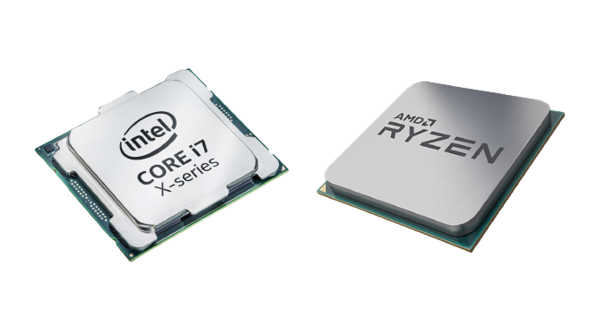
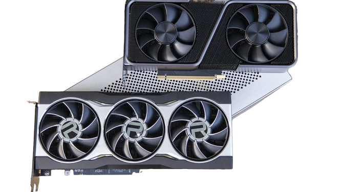
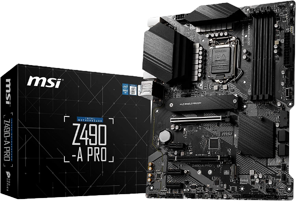
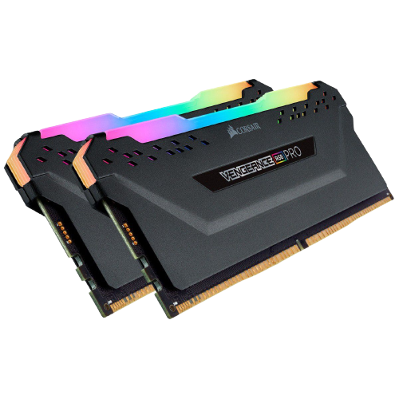
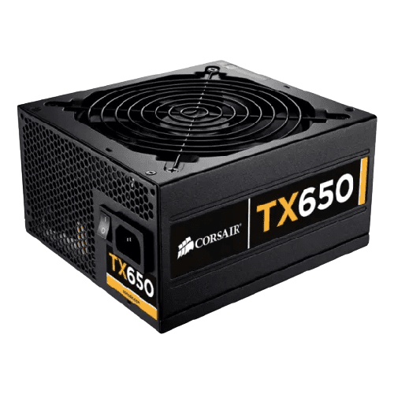
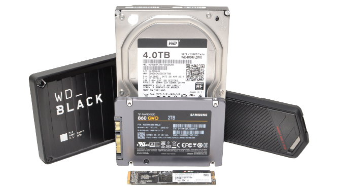
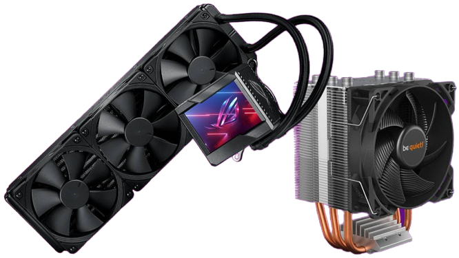

The pocessor is what controls everything that happens in the computer. A better processor will run faster and load tasks faster. Faster processors also use more power and produce more heat.

The graphics card is in charge of displaying everything you see onto your monitor. High quality graphics cards are most commonly used for gaming and video rendering. Graphics cards, similarly to processors, use a lot of power and produce a lot of heat.

The motherboard is the body of a PC. It connects all of the parts together and allows them to communicate. It also distributes power to all of the compenents when they need it. A good motherboard will have high power delivery and allow for more voltage to be sent to the CPU and GPU.

Ram is short ter storage for tasks that are currently being performed. This involves things such as google, games and servers. Faster RAM allows information to be transfered faster. The recomended amount for a computer is 16 gigabytes but the maximum availible currently is 2 terabytes.

The power supply is what gets plugged into the wall. It distributes power to the motherbord so all of the components recieve the power they need to perform how they want to. Better power supplies collect more watts and transfers the AC and DC power more efficiently.

SSDs and hard drives are both components that store the computers files and any files you download. SSDs are much faster than hard drives. Most modern computers now use SSDs called M.2 NVMe SSDs. They are fast and compact storage devices.

There are main types of coolers, air and water. Air Coolers transfer the heat through copper pipes and then to a radiator where the fans get rid of the heat from the radiator. Water coolers use water that goes through tubes which pick up the heat and then go to a radiator where fans blow away the heat from the radiator fins. Water coolers are much more efficient and effective because of the thermal conductivity of water, but they're also more expensive.

Visit computerinfobits.com for more simple and in depth descriptions of computer parts!